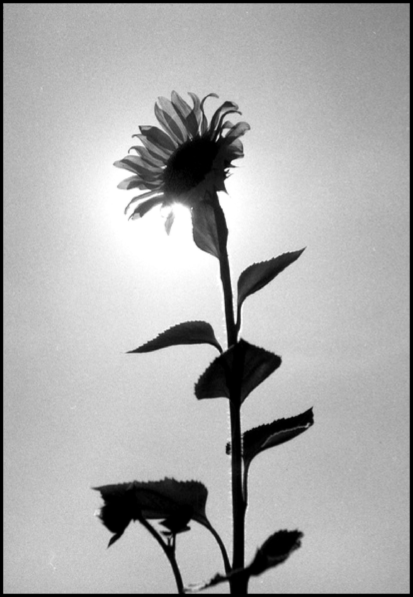
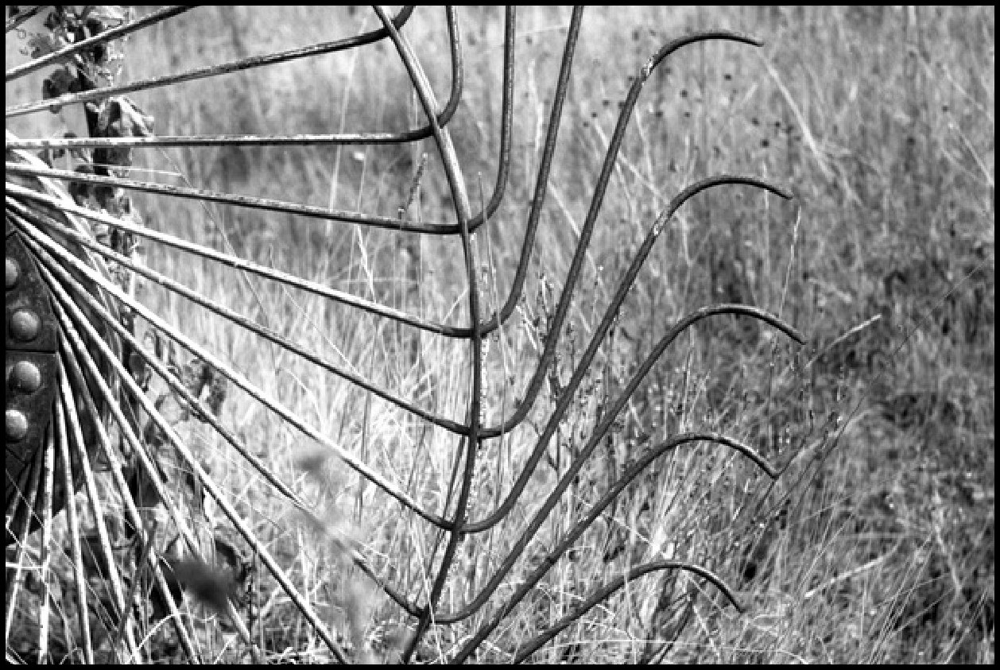
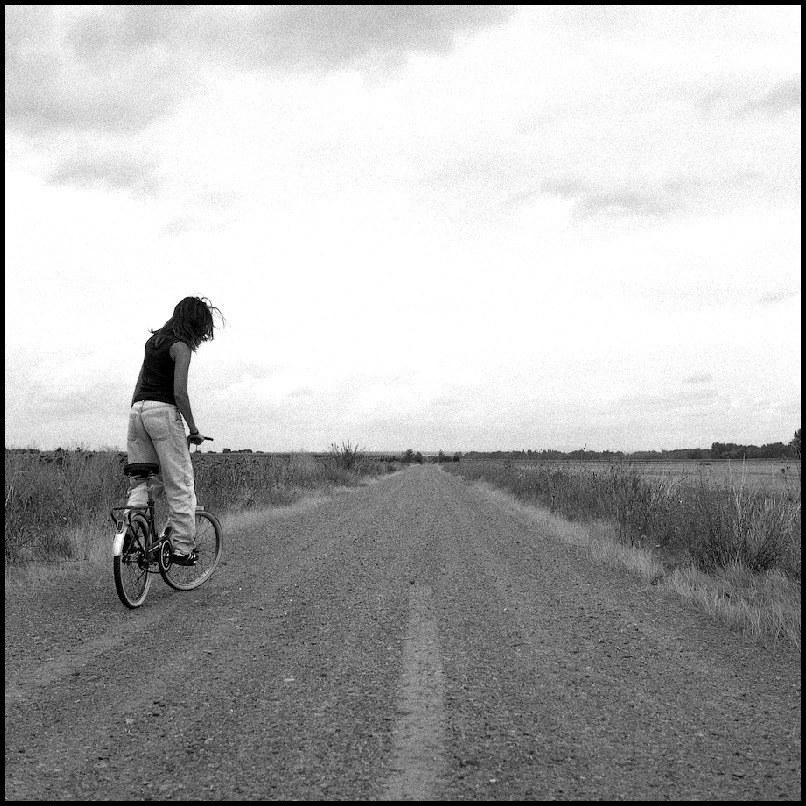
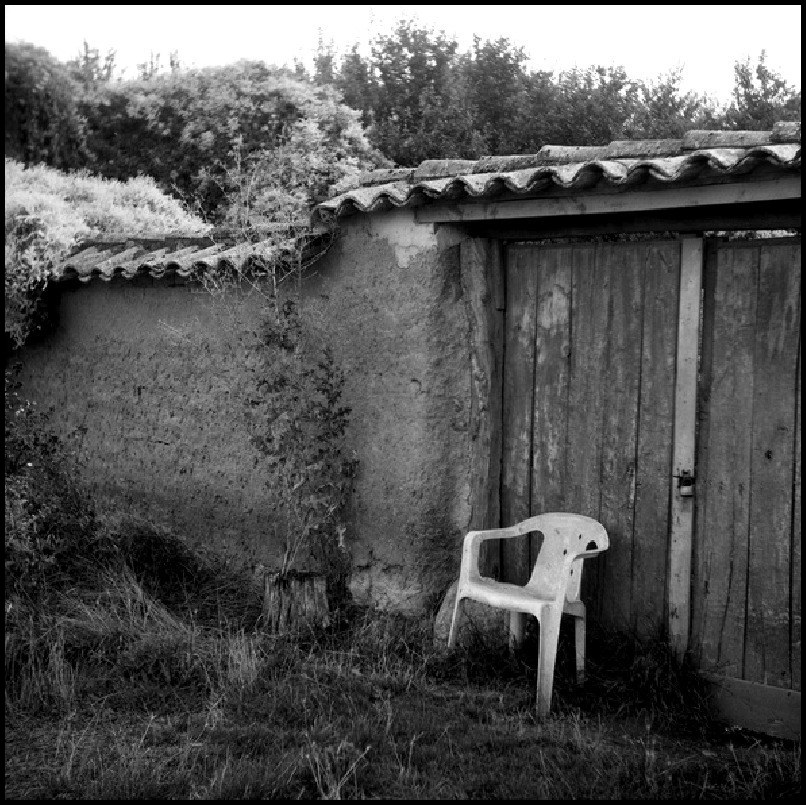
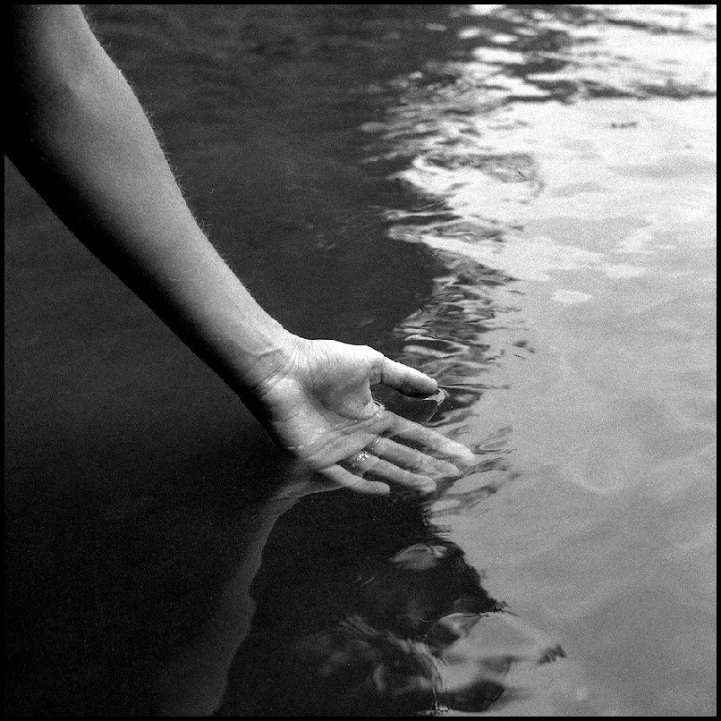

Tierra de nadie
A photo-poetry book inspired by Tierra de Campos. Poetry and photography combine for a journey into the past, back to the summers in the village.

About the project
The setting is Tierra de Campos: plains of wheat and barley under very blue skies. The poems follow the protagonist’s life, from childhood, with its first falls and discoveries, through adolescence, with love and violence, to adulthood, a time to look back. A time of memory.
The photographs appear alongside the poems. Slow images of the landscape, the farm tools, the walls and the sobriety of Castile. Agile poetry that recalls what was lived, with images that stop time: the two speeds at which the book beats.
From Tierra de Campos to Tierra de nadie
Tierra de Campos is emptying out. Every year there are fewer neighbours in the villages, fewer children on the threshing floors and more houses shut, waiting for a summer to open them. The project sets out to make the rural world known through poetry and documentary photography, speaking equally to those who came back, those who left, those who stayed and those who were never there.
La abuela se muere,
los niños ya son adolescentes
y las eras de mi pueblo volverán a arder este año.I · El pueblo

A 120 por los caminos rotos
el asfalto podrido se abre en dos
como corteza de pan de leña.XIV · A 120 por los caminos rotos

Hoy hay misa.
Debe de ser domingo, o sábado, o martes:
aquí siempre hay misa.IV · Todos los perros lloran

The book
A poetry book illustrated with photography, from a complete series of 25 analogue photographs in medium format. A selection of the poems received the José Hierro Prize in 2025. The book will be presented together with a photographic exhibition.
Presentation dossier
The project in 6 pages: texts, poems and photographs.
Download the dossier (PDF, 6 MB) ↓Interested in a print?
Photographs from this series are available as prints. Write to me and I will send you the sizes, paper and prices available.